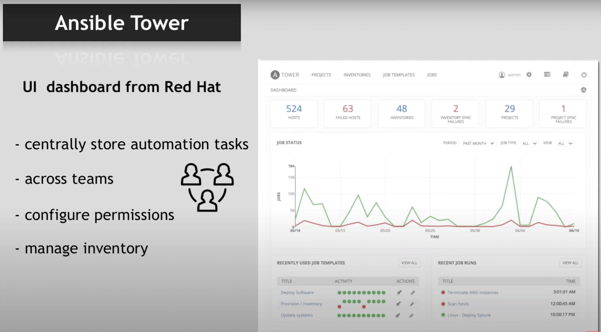

About Ansible 🤖
Info
Tool to automate IT tasks
Why use Ansible?
For example you have 10 servers and want to deploy a new version of an app on it, or update Docker on them. So you have to ssh to those servers and do it by yourself and it’s time consuming.
- Execute tasks from your own machine
- Configurations | Installation | Deployment step in a single
YAMLfile - Re-use same file for different environments
- More reliable & less likely for errors
Info
Ansible supports all infrastructure and it is agentless.
Ansible Playbooks
tasks:
- name: a task in postgres # Description of task
postgresql_table: # Module name
table: foo # Arguments
rename: bar # Arguments
- name: change owner # Description of task
postgresql_table: # Module name
name: foo # Arguments
owner: newuser # Arguments
Execute multiple modules in a sequence
tasks:
- name: create dir for nginx
file:
path: /path/to/nginx
state: directory
- name: install latest nginx
yum:
name: nginx
state: latest
- name: start nginx
service:
name: nginx
state: started
Where to execute tasks and who execute them?
- hosts: databases
remote_user: root
vars:
tablename: foo
tableowner: newuser
tasks:
- name: rename table from {{ tablename }} to bar
postgresql_table:
table: {{ tablename }}
rename: bar
- name: change owner
postgresql_table:
name: {{ tablename }}
owner: {{ tableowner }}
Warning
This file 👆 is called a play and you can have multiple plays in a single YAML file. That file called a Playbook and with name tag you can name plays.
Where are hosts value come from?
Success
Ansible Inventory List
Inventory means all the machines involved in task executions
Hosts file 👇
Ansible Tower

course on youtube.